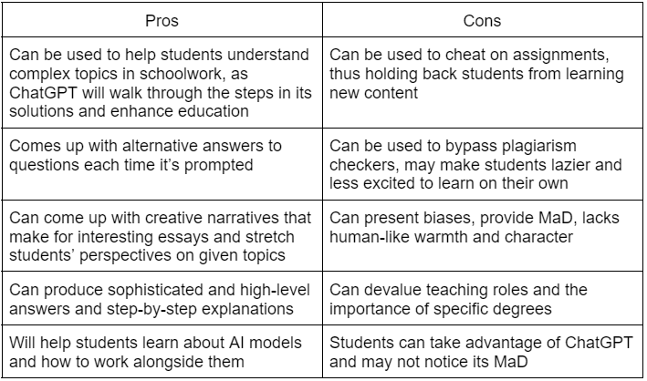

Infrastructures?
What are infrastructures? According to MasterClass "Infrastructures are the physical and institutional systems that underpin society." In your society, there are certain systems set in place meant to support how the society runs. Whether that be the education or the security of the citizens, these systems require a process to pass information to the system itself or the ones receiving from the system.
As noted on the home page, ChatGPT affects all layers of information, and therefore it may affect our infrastructures, which in turn affects how the infrastructures help us. Curious about the effects on infrastructure, we decide to look at two in particular: Our education system, and our cybersecurity system. More about why we look at these infrastructures specifically will be in the sections below.
So in this section, we consider these factors in our analysis of the infrastructures we've chosen in order to analyze the outcomes of ChatGPT on out infrastructure:
- The effects of ChatGPT on the parties involved.
- The overall pros and cons.
- The future implications that may come out of ChatGPT usage in the future on these infrastructures.
- Finally, the way that this affects you.
Cybersecurity
Why Cybersecurity?
Are you tired of trying to brute force your way into someone's bank account? Well, we have news for you! A script can help you do that! What's that? You don't know how to write it? Well more news! ChatGPT might be able to help with that.
When have you ever actually thought about cybersecurity in your work or academic life? It depends on each person, but according to the Unisys Security Index Global Report of 2021,
"almost half (45%) in the U.S., Australia and New Zealand have downloaded or installed software not approved by the IT department, typically because these other apps are ones that they use in their personal life (42%) or because they are perceived to be better than those provided by their company (42%). "
Depending on how you see it, nearly half of the workers in the countries above are not paying attention to the cybersecurity guidelines their companies have set to protect the indiduals and the organization. Cybersecurity is in every avenue of our lives when we are connected to the internet. Even if you were to study online, or work remotely, it will put your system and your employer/school in danger of cyberattacks.
Now we aren't here to chastise anybody, but rather we want to focus on the part about MaD AI in cybersecurity. Considering the lack of concern in cybersecurity, we now have ChatGPT to add to the mix, which could go either way depending on who you are. What we will discuss in the sections below might answer this question.
Who's Involved?
As is with any situation, there are parties who are actively involved and those who aren't. Of course, we mentioned before that everyone is affected in some way, but this section focuses on parties who are manipulating ChatGPT to do something regarding cybersecurity, rather than just passively being affected by these actions. The following are the parties that we want to consider, which might not represent all the parties available, but just enough for the ease of understanding the concepts we are showing:
- Black hat hackers (malicious actors)
- White hat hackers (cybersecurity professionals)
- Businesses
- Institutions
- Employees
You might notice that all these parties are connected to one another in some way, and an effect on one party can lead to the rippling of others. Black hat hackers may try to invade a business or an institution using employees as stepping stones to breach them while white hat hackers are actively preventing this. Breaches in a business may lead to declining relationships with partnered institutes.
Cybersecurity: Pros and Cons of ChatGPT
Here are some of our thoughts on the pros and cons of ChatGP, based on our analysis of events that we've all heard of after the release of ChatGPT. Some ideas originate from Alspach's pros and cons list:
Cybersecurity: Future Implications of ChatGPT
If there is one thing that is for sure it is that script kiddies, black hats who rely on premade scripts and tools to get them what they want, will be applying ChatGPT to everything they do. Focusing on the last row of the pros and cons list specifically, it is in our opinion that black hats might be more inclined to join the cybersecurity field with the intent to do harm for political or personal gain. Arguably, there is less incentive to join the cybersecurity field as a white hat when it is much harder to gain what black hats will from ChatGPT, such as political gain.
According to an article about script kiddies and ChatGPT usage written by Dan Goodin, he quotes a security firm called Check Point Research that cybercrime forums in mere weeks after ChatGPT's release "were using it to write software and emails that could be used for espionage, ransomware, malicious spam, and other malicious tasks (Goodin)."
Goodin then follows up with screenshots and examples of this. These examples were about how cybercriminals are utilizing ChatGPT to organize credential trading platforms to trade stolen sensitive information, how researchers are creating test phishing emails, and how more cybercriminals are teaching others less technical cybercriminals how to use ChatGPT to write malicious scripts.
Using Goodin's examples as a preface for the future, ChatGPT may be used to indoctrinate more cybercriminals, set up working environments as good as those in the industry, and also to create sophisticated attack methods. At the same time, it could be said that cybersecurity professionals who defend organizations might benefit from the same methods of using ChatGPT as those hackers. For example professionals may be able to translate technical jargon and concepts into layman terms for business heads and entry level employees to understand, overall strengthening the company's cybersecurity culture. Another example might be using ChatGPT to create stronger defensive mechanisms and to possible detect more weaknesses in their systems.
It could be said that at this point, ChatGPT is already out in the wild with so much potential, yet if people in the industry who want to do good don't participate in the usages of AI, then the malicious actors who don't hesitate to participate in morally wrong opportunities will use ChatGPT themselves to raze our systems. Sometimes it takes diving in headfirst in order to truly understand what you are dealing with, and so it might be at that point where the cybersecurity industry delves deeper into the usages of ChatGPT and discovers whether it is truly wrong or if it could be a future for the cybersecurity infrastructure.
So How Does this Affect You?
So in the end it comes down to you, the person relying on this infrastructure. How will cybersecurity changes influence you as an individual? For one, you might get more convincing phishing emails, but on the other hand, you might have stronger security systems in place thanks to discoveries from ChatGPT. In the end, ChatGPT has brought up many more conversations, and through your usage of it, you will be part of the solution of answering them.
Education
Why Education?
As ChatGPT3 gains popularity in the media and becomes more commonly used, one notable group taking advantage of the program’s skills are students. All students can agree that homework and studying for exams are the worst parts of school. What if someone, or something, could finish these tasks for you?
ChatGPT3’s creativity and its ability to come up with solutions to advanced problems have been especially appealing to students. The program also offers step-by-step walkthroughs when answering questions so that users can fully grasp why ChatGPT came up with its answer. In particular, the program’s ability to create new responses each time makes students less likely to get caught plagiarizing and suffer the consequences of academic misconduct. As a free resource on the internet, internet-using students of all ages can access ChatGPT's power, and thus we wanted to analyze the effects that ChatGPT can have on education moving forward.
Who's Involved?
The most popular users that are involved are students. We can assume that, since it is a quite new resource and may be hard to navigate for very young students, the most popular age-groups are high school and college students. However, teachers and professors are also involved, as they now need to be aware of the threat that their students may be using ChatGPT on their homework assignments. Many teachers have been making statements on their syllabi stating that ChatGPT usage is prohibited, or else have had to be conscious of the fact that their students may be using ChatGPT to solve homework and exam questions. In addition, tutors, researchers, professors, graduates, or support services can be affected as ChatGPT's features may potentially put out of jobs, and the worry that degrees can be devalued due to automation is a constant threat.
Education: Pros and Cons of ChatGPT
These are some of the pros and cons of ChatGPT that we have come up with based on our analysis with regards to the education infrastructure:
Education: Future Implications of ChatGPT
Although it seems as if ChatGPT is a looming threat towards education and may produce lazier, "uneducated" students, it seems as if this risk does not worry all educators. Though it is hard to catch ChatGPT on plagiarism, teachers such as Professor Walsh have mentioned that it is clear to veteran educators when papers are written by students due to their unique warmth and nuances only human students are capable of capturing, as of now.
This doesn't mean that teachers aren't worried, however. Walt Gardner from an NYT Opinion piece about ChatGPT in schools mentioned that a possible solution to preventing ChatGPT usage is to have students take a baseline writing test throughout the schoolyear, so teachers can identify if their papers were written by AI. Though this may be helpful to limit the use of ChatGPT in classes, this would take a lot of work from the teacher, and these baseline tests are also not very meaningful when it comes to non-essay related tasks, such as math equations or codes.
Betty Luther Hillman who also wrote in the NYT Opinion piece, stated that if teachers are prompting their students to write about prompts that ChatGPT can easily generate pieces about, then those teachers aren't challenging their students enough. She believes that creating more complex, nuanced prompts would not only eliminate ChatGPT cheating, it would also challenge students, as well.
As you can see, there is a lot of controversy and gray areas when it comes to ChatGPT in the education infrastructure.
Jeremy Weissman writes in Insider Higher Ed, that ChatGPT is comparable to the COVID-19 pandemic, and that it will "plague" education. He states that universities should immeidately designate an AI task force, place a stronger focus on classroom and human interactions, and to incorporate more in-class assignments. He also mentioned that schools should have designated sources specifically designed to work with GPTs and AI, but outside of this class, schools need to develop new protocol to ban GPT use.
However, as John Villasenor writes in Scientific American, its merely impossible to ban the rise of ChatGPT. If anti-AI plagiarism web checkers are put in place, this may flag students who weren't using ChatGPT, as cheaters. He writes that education is a slow industry to advance, and students are learning skills in school, such as long division, that are now deemed useless due to the onslaught of technology. Instead, we must teach students how to adapt to new technology, and to work alongside AI models, such as ChatGPT, as it is inevitable that AI will have a huge presence in society.
So How Does It Affect You?
Whether you are a student, an educator, or just curious about ChatGPT, it's clear to see that ChatGPT has its pros and cons, especially in the field of education. ChatGPT can enhance education by providing extra resources to students and can teach them more about the wonders of AI-generated models and the future of solving. However, it can also be used as a way to cheat on assignments, and impact students ability to learn as well as add more doubt and worries to teachers. If you are a student, have you/do you think you would use ChatGPT on your assignments? Do you see it as a reliable resource? For educators, do you feel as if ChatGPT will be a concern in your classroom and do you see it as a risk? Have you used ChatGPT, and do you think you will change your curriculum at all after seeing how it works?
There's no way to see where ChatGPT will go and how it will develop, but it's important to be aware and adapt to it. Curriculums are quite difficult to change, so it will be interesting to see how schools will respond to ChatGPT-3 and the countless AI-generative models that will come after it.
Images by Freepik